O sistema de partículas do Blender permite criar diferentes tipos de efeitos estáticos e animados. Uma das suas funcionalidades mais interessantes é a capacidade de renderizar objetos no lugar de partículas. Em baixo, apresentamos alguns exemplos.
O primeiro passo é criar o objeto que pretendemos utilizar. Neste caso, vamos criar um floco de neve a partir do design abaixo disponibilizado.
Snowflake (simply) de rones. Disponível em Openclipart.org .
O floco foi criado a partir de um plano.
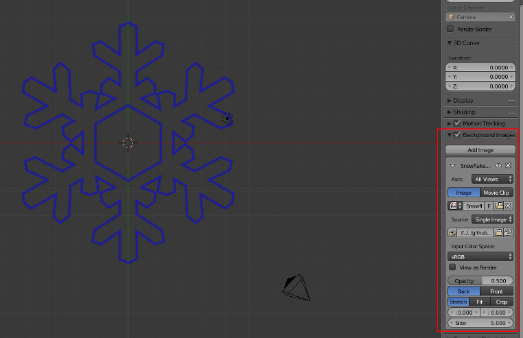 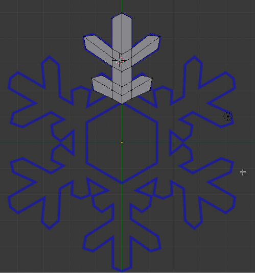 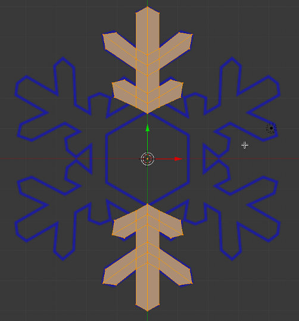 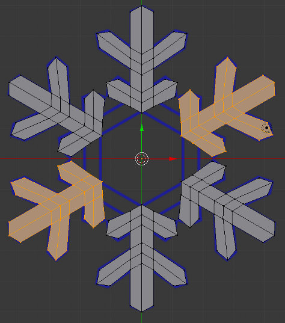 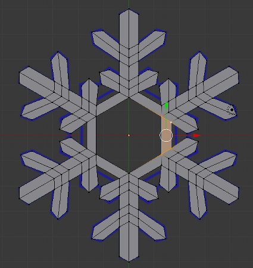Crie um plano e coloque-o acima da câmara (por pré-definição, as partículas vão cair por causa da gravidade), fora do enquadramento.
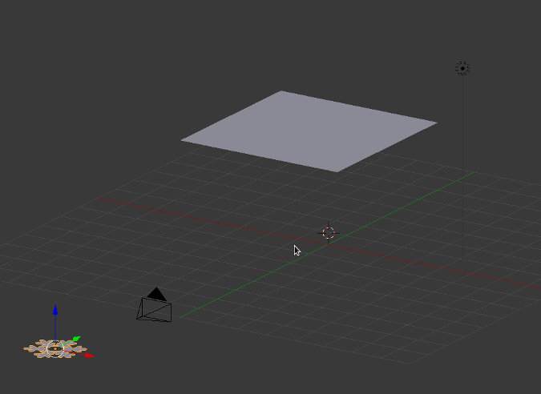 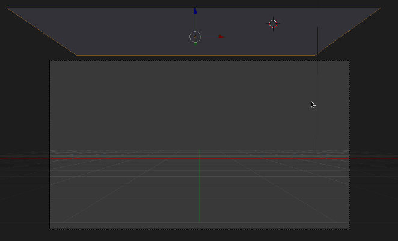Adicione um sistema de partículas ao plano. Se fizer ALT+A, irá ver as partículas a cair do plano.
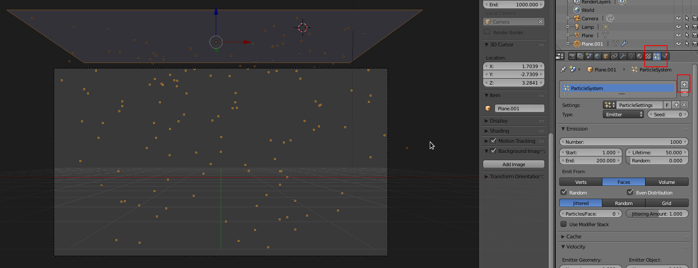Configure o sistema de partículas de acordo com a imagem.
Na imagem abaixo, o primeiro painel (Emission) está fechado porque foram utilizadas as configurações pré-definidas. Pode alterar estes parâmetros a seu gosto:
O primeiro Random dá variação aleatória à velocidade inicial.
A ativação da rotação faz com que as partículas possam rodar e o Random dá um valor aleatório à orientação das partículas.
Podemos configurar a dimensão de cada partícula (Size 1 = dimensão real do objeto) e atribuir um valor aleatório à dimensão para criar maior diversidade de dimensões.
A última opção (Object) é onde definimos que pretendemos renderizar um objeto específico.
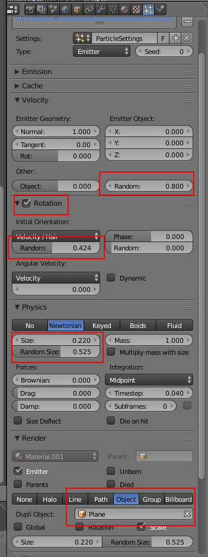 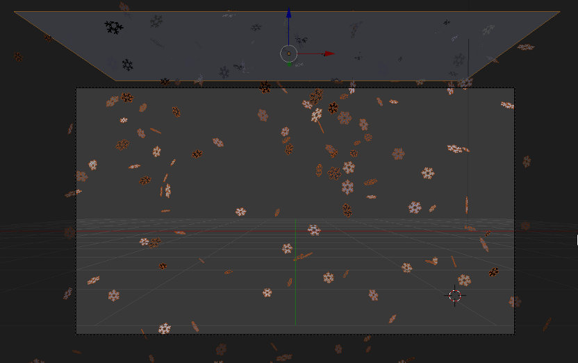Depois de atribuirmos uma cor aleatória a cada floco (ver configuração em Algumas configurações de nós úteis)...
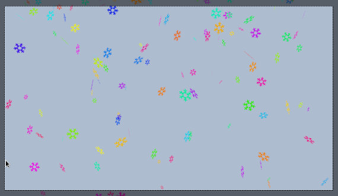Começamos por criar duas árvores diferentes. Repare que a origem das árvores está centrada na base. Este passo é importante para a nossa floresta. Iremos usar um plano para gerar as árvores e estas vão ter a sia origem alinhada com o plano. Se a origem não estiver na base e estiver no centro da geometria, uma parte do tronco irá ficar abaixo do plano.
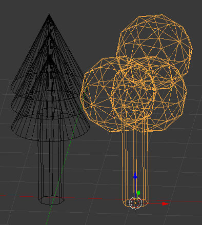Atribua materiais diferentes às árvores para ser mais fácil distinguir posteriormente.
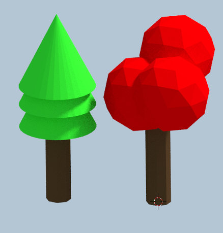Selecione as duas árvores e crie um grupo (CTRL+G). Demos o nome "arvores" ao grupo.
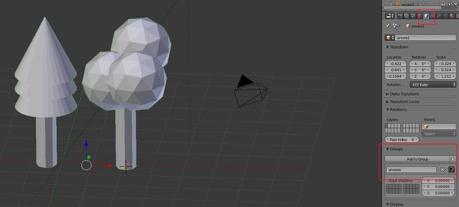